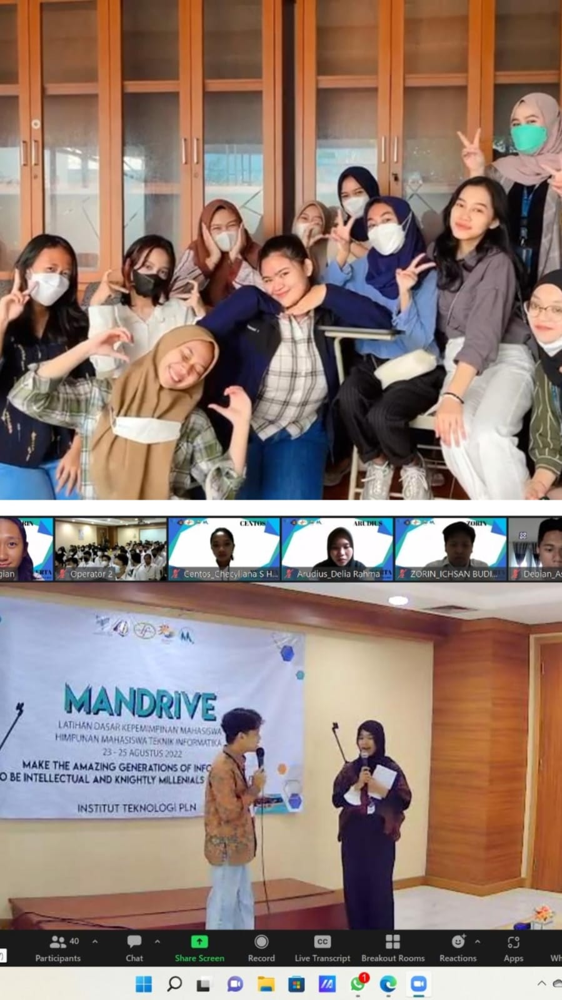

This Is My Activities.
There are several organizations that i joined during my studies.
Such as Pelita#5, KPU HIMAKA, Horas Cup, PMK, and many others. These are some organization from my major.
Because since the first semester i studied online, so all the activities that i do in this organization are also online but that doesn't make me lazy to join the organization. After class offline were held, i was finally able to meet my friends that i met via zoom(online).
Entering the organization gives me a lot of experience and relations with people around me. Here are two pictures of some of the organizations that i have followed so far. here is one of our online and offline meetings.
